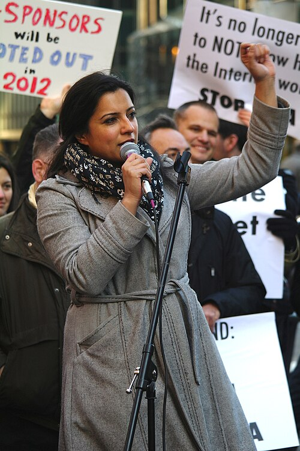

Reshma Saujani é uma advogada e ativista americana, de origem
indiana, que se tornou uma voz poderosa na promoção da igualdade
de gênero na tecnologia, atuando há mais de uma década para
empoderar mulheres.
Em 2012, fundou a Girls Who Code, organização que já impactou
milhões de meninas ao oferecer educação em programação e
incentivo à participação feminina no setor.,
Atualmente, além de seu trabalho no Girls Who Code, Reshma
lidera a Moms First (antiga Marshall Plan for Moms), uma
iniciativa voltada para políticas de apoio às mães que
trabalham, incluindo licença parental e igualdade salarial. Como
palestrante e autora de best-sellers, defende que as mulheres
devem trocar a busca pela perfeição pela coragem para enfrentar
desafios e crescer profissionalmente.
Reshma também é a autoa de "Brave, Not Perfect" ("Corajosa, não
Perfeita", em tradução livre), e sua mais influente TEDtalk,
"Teach girls bravery, not perfection” (Ensine à meninas coragem,
não perfeição, em tradução livre) tem mais de 5 milhões de
visualizações em âmbito global.

Saujani, foi destaque na sessão de abertura da Conferência da
American Library Association de 2017, falando em apoio a
programas voltados para meninas ingressarem nas carreiras
relacionadas à Ciência da Computação.
Outras obras de Saujani incluem "Women Who Don't Wait in Line:
Break the Mold, Lead the Way" (Mulheres que não esperam na fila:
Quebre o padrão, guie o caminho, em tradução livre), publicado
pela Houghton Mifflin Harcourt em 2013, e "Girls Who Code: Learn
to Code and Change the World" (Garotas que escrevem código:
Aprenda a escrever código e mude o mundo, em tradução livre),
publicado pela Viking em agosto 2017.
Embora tenha nascido em Illinois, ela é de ascendência Gujarati
(uma língua indo-ariana falada principalmente no oeste da
Índia), o que tornou Saujani a primeira mulher hindu-americana
(e a primeira mulher sul asiática) a concorrer ao Congresso
Norte-Americano.